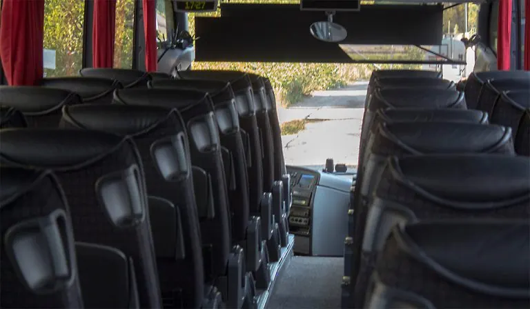
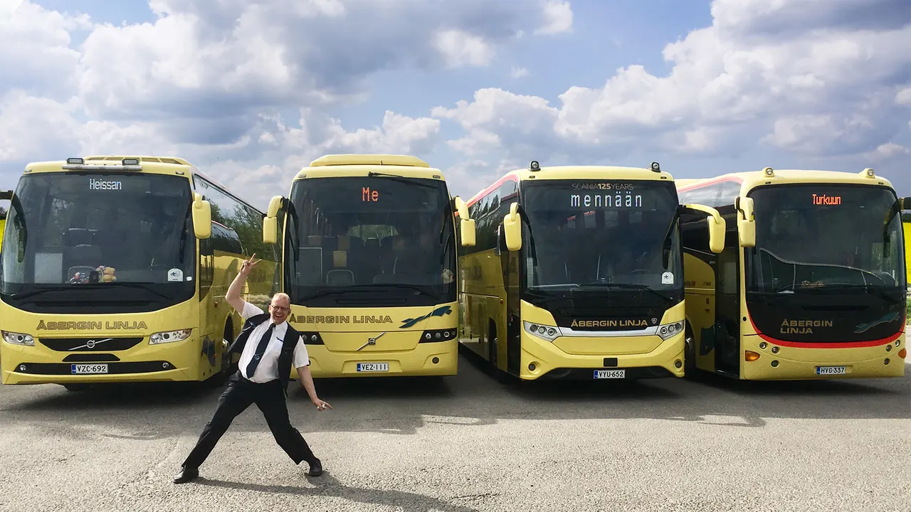

Espoo · Helsinki · Finland
Charter buses in Helsinki
Bus Travel Åbergin Linja is a family owned company in Espoo, Southern Finland. Friendly, reliable and welcoming service every time you travel with us.

Services
Full-service transport
Airport, hotel and conference transfers
Seamless transfers tailored to your needs.
Shuttle services
Efficient shuttle services for events and groups.
Sightseeing tours
Memorable sightseeing tours for your group.
Long-distance bus travel
Long-distance bus travel all over Finland.

Fleet
From minibus to full-size coach
Whether you need a minibus or a full-size coach, our modern and diverse fleet has the perfect option. We cater to groups of 13 to 60 people.
13–16 seats
Minibus
30–34 seats
Midibus
49 seats
Honka bus
49–54 seats
Coach
57–60 seats
Full-size coach

Sustainability
Responsible tourism
In 2021, Åbergin Linja became the very first bus company to be awarded the Sustainable Travel Finland mark.
We hold both the ISO 9001 quality certificate and the ISO 14001 environmental management certificate. With vehicles carrying up to 60 passengers, emissions per passenger kilometer remain low.